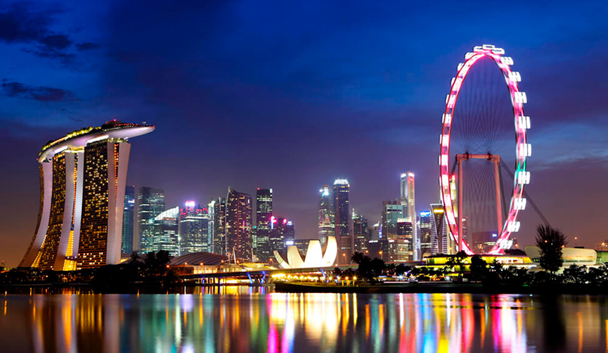

Home

Singapura é uma cidade-estado vibrante localizada no sudeste da Ásia, conhecida por sua impressionante mistura de modernidade e tradição. Com uma população diversa, Singapura é um ponto de encontro de culturas, onde influências chinesas, malaias, indianas e ocidentais se entrelaçam harmoniosamente. Uma cidade é reconhecida por seus altos padrões de vida, eficiência, infraestrutura de ponta e pela limpeza de suas ruas.